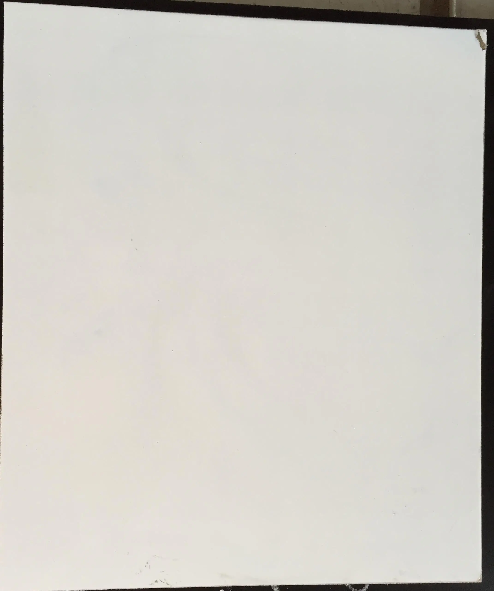

《WEB应用基础》课程结业报告
一、做的什么
对于本次课程结业考核，我做的是一个关于我出生成长的地方大足的一些名胜的旅游景点。重点在于我的家乡以时刻闻名，有世界文化遗产的大足石刻。
其中内容包括大足石刻、昌州古城、香国公园、香国公园赋、圣寿寺、荷花山庄共六个网页以及我的结业报告
二、开发过程
通过VS Code软件制作完成以MDB模板为基础的静态网站设计。Material Design 是由Google推出的设计语言，这种设计语言旨在为手机、平板电脑、台式机和“其他平台”提供更一致、更广泛的“外观和感觉”。
以Bootstrap 为基础，建立了很多 CSS 框架，构建了许多直接使用的组件。其中 MDBootstrap 效果最佳。
在构建好基本框架之后，我根据需求在网上学习收集素材，并学会理解运用，真正变成自己的东西。实现颜色文字字体的改变和图片的修改，还有网站导航条的设置和页面的跳转功能。
想让自己的作品更加有魅力，就要有合适的字与颜色的搭配，让自己内容上的特色更加突出突兀。再依据自己的想法和老师的要求进行添加修改，王成修改之后，需要对网站进行托管。
三、遇到的问题
1、第一次接触新方面的知识和领域，难免会有不适应，但是我对这方面的学习充满兴趣，对我来说意义重大，不过开始总是会迷茫的，没有方向。
2、这对我学习的能力有很大的考验，需要我花费大量的时间去网上寻找相关资料，以及大量的训练尝试，每一步的成功总是在尝试失败之后才有成就的。对我的理解也有很大挑战，需要我不断的尝试，这使我前进的步伐更加艰难。
3、在有时候文件位置的不对会导致文件不能正常读取，内容不能显示，以及有时候文件文件名的定义会混乱我对文件的调用。
4、在图片导入的时候，有时候会因为图片格式的问题而显示不出来，图片不完整以及有时候会打乱我在网页的排版的情况。
5、网站托管时遇到一些问题，按照教程一步步做但是最后托管上去的网站还是点进去会报错，或者内容无法显示。
5、在进行网站的颜色调节时，有时候颜色并不是自己想要的，对于一些大小比例的修改也不是很熟悉，改了之后会导致排版发生改变。
6、在后期对网站想要进行优化的时候，会应为整体布局相关代码设置记不清，导致整个代码逻辑越来越混乱，需要再次的逻辑梳理，命名方面对程序编写的快慢有很大帮助。
四、如何解决
首先对于部分代码理解不到位的时候，我会通过百度或者CSDN上面寻找解决办法，大部分基础知识通过棋歌网站上学习。棋歌网站上的讲解非常通俗易懂，只要肯去学习，必有所得。
素材文件的放置问题，我是通过与同学的讨论才得知对于素材的引用时对于路径的描述一定要详细，不然有些文件加载不出来显示空白。还有图片的格式一定要注意准确。
在素材放置的时候有时导致网站排版发生变化，我一般会删除部分代码并在老师的教学网站里找一些自己需要的代码进行修改加入，这样能保证网站排版的合理以及美观。
对于网站托管时出现的问题，我一般都是反复的尝试，或者倒退，后面突然就好了，不太清楚其中原理，有些模糊，试了各种方法。
五、未解决的问题
一些框架的代码实现掌握的还够熟悉，css的调整规划不够好，网上素材和老师教学网站里的代码理解不够透彻，只能是搬运套用，对代码程序的理解不够到位。
排版还是会出现错误，要经过多次调试才能避免排班的问题，在排版方面有待提高。有时css文件不能正常使用。对命名和逻辑思想有待加强。网页托管的详细相关操作有待进一步的提高和学习。
六、总结
本次结业作业要求采用CSS或喜欢的任何CSS框架构建一个主题自选且不少于5个的页面网站。虽然这个过程中我遇到了很多问题，但是我每遇到一个解决一个问题就是我的一次成长，也是一次知识的不断累加。这次的实践操作，让我对web的设计有了更深一步的认识与了解。
在web网站设计中，我的网站在美观和便捷方面都有待提高。这次的实验不仅是对我学习的检验，更是对我学习知识的巩固与加强，更提升了我自己的动手能力与自学能力。